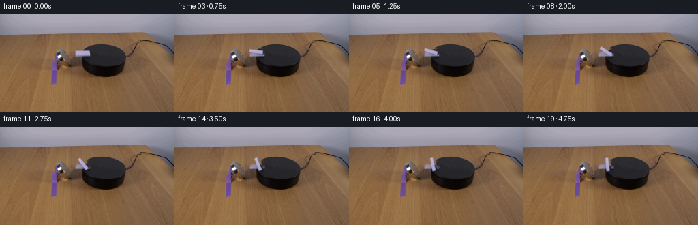
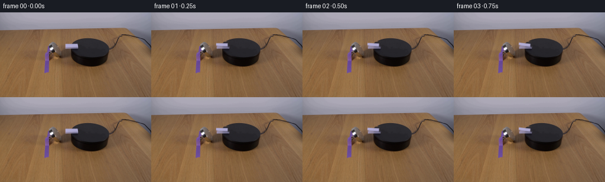
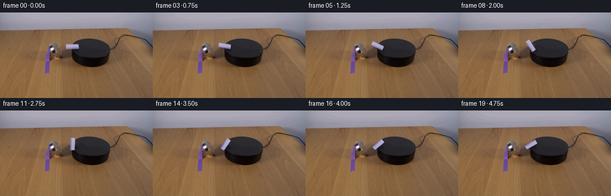
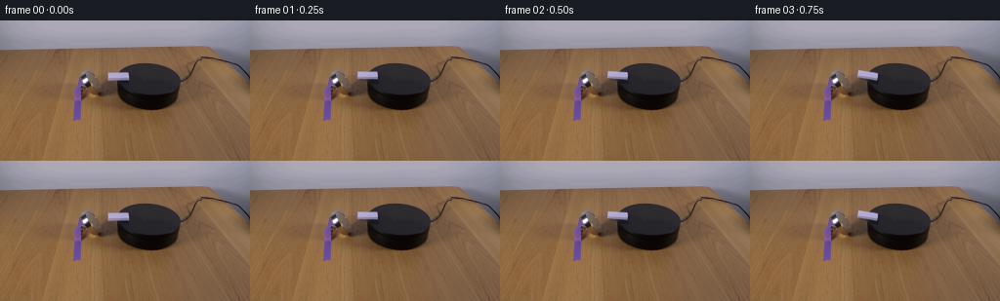

CODING AGENTS AS PIXEL WORLD MODELS
traex/DeepSeek-V4.1-Flash · 0095
点击播放 · 原生 RGB 像素
逐轮保存的候选
回放视频、检查图与代码变化。
每份候选均可单独播放。实际图片检查记录在下方工具轨迹中。
候选 01播放与检查图
点击播放 · 原生 RGB 像素


展开代码变化
--- 上一保存版本
+++ 本次保存版本
@@ -0,0 +1,143 @@
+from pathlib import Path
+
+import cv2
+import numpy as np
+from PIL import Image
+
+import artifact_io
+
+
+CASE_DIR = Path(__file__).resolve().parent
+WIDTH = 256
+HEIGHT = 144
+FRAMES = 20
+FPS = 4
+
+
+def _domino_alpha(shape):
+ """Antialiased quadrilateral matching the top face in the first frame."""
+ ss = 6
+ h, w = shape
+ mask = np.zeros((h * ss, w * ss), np.uint8)
+ corners = np.array(
+ [
+ [0.7, 1.7],
+ [21.2, 0.5],
+ [21.2, 8.1],
+ [0.7, 7.3],
+ ]
+ )
+ pts = np.round(corners * ss).astype(np.int32)
+ cv2.fillConvexPoly(mask, pts, 255, lineType=cv2.LINE_AA)
+ return cv2.resize(mask, (w, h), interpolation=cv2.INTER_AREA).astype(np.float32) / 255.0
+
+
+def _make_background(frame):
+ """Remove the initial domino while preserving the photographed surroundings."""
+ h, w = frame.shape[:2]
+ alpha = _domino_alpha((14, 25))
+ mask = np.zeros((h, w), np.uint8)
+ roi = np.round(alpha * 255).astype(np.uint8)
+ mask[50:64, 109:134] = roi
+ mask = cv2.dilate(mask, np.ones((3, 3), np.uint8), iterations=1)
+
+ # TELEA follows the diagonal table/platform boundary better than a large blur.
+ clean = cv2.inpaint(frame[:, :, ::-1], mask, 3.2, cv2.INPAINT_TELEA)
+ clean = clean[:, :, ::-1].astype(np.float32)
+
+ # Restore fine photographic grain that inpainting tends to flatten.
+ rng = np.random.default_rng(95)
+ grain = rng.normal(0.0, 0.65, clean.shape).astype(np.float32)
+ feather = cv2.GaussianBlur(mask.astype(np.float32) / 255.0, (3, 3), 0.55)
+ clean += grain * feather[:, :, None]
+ return np.clip(clean, 0, 255).astype(np.uint8)
+
+
+def _extract_sprite(frame):
+ """Keep the photographed top face, but exclude table pixels at its corners."""
+ x0, y0, x1, y1 = 109, 50, 134, 64
+ patch = frame[y0:y1, x0:x1].astype(np.float32)
+ alpha = _domino_alpha(patch.shape[:2])
+
+ # The crop is already aligned to the sprite; store its exact top-left location.
+ return patch, alpha, np.array([x0 + 12.0, y0 + 7.15], np.float32)
+
+
+def _rotated_sprite(sprite, alpha, angle_deg):
+ h, w = alpha.shape
+ diag = int(np.ceil(np.hypot(h, w))) + 6
+ canvas = np.zeros((diag, diag, 4), np.float32)
+ y0 = (diag - h) // 2
+ x0 = (diag - w) // 2
+ canvas[y0 : y0 + h, x0 : x0 + w, :3] = sprite
+ canvas[y0 : y0 + h, x0 : x0 + w, 3] = alpha
+
+ center = (diag / 2.0, diag / 2.0)
+ matrix = cv2.getRotationMatrix2D(center, -angle_deg, 1.0)
+ rotated = cv2.warpAffine(
+ canvas,
+ matrix,
+ (diag, diag),
+ flags=cv2.INTER_CUBIC | cv2.WARP_FILL_OUTLIERS,
+ borderMode=cv2.BORDER_CONSTANT,
+ borderValue=(0, 0, 0, 0),
+ )
+ return rotated, center
+
+
+def _composite(background, rotated, center, pivot):
+ """Alpha-composite a rotated RGBA sprite with a soft, physically plausible edge."""
+ out = background.astype(np.float32)
+ rh, rw = rotated.shape[:2]
+ cx, cy = center
+ left = int(np.floor(pivot[0] - cx))
+ top = int(np.floor(pivot[1] - cy))
+
+ x0 = max(0, left)
+ y0 = max(0, top)
+ x1 = min(WIDTH, left + rw)
+ y1 = min(HEIGHT, top + rh)
+ if x0 >= x1 or y0 >= y1:
+ return out.astype(np.uint8)
+
+ sx0 = x0 - left
+ sy0 = y0 - top
+ patch = rotated[sy0 : sy0 + (y1 - y0), sx0 : sx0 + (x1 - x0)]
+ rgb = patch[:, :, :3]
+ alpha = np.clip(patch[:, :, 3], 0.0, 1.0)
+
+ # Keep the original highlight direction in screen space as the face turns.
+ yy = np.linspace(-0.5, 0.5, rgb.shape[0], dtype=np.float32)[:, None]
+ light = (1.055 - 0.105 * (yy + 0.5))[:, :, None]
+ lit = np.clip(rgb * light, 0, 255)
+
+ region = out[y0:y1, x0:x1]
+ region[:] = region * (1.0 - alpha[:, :, None]) + lit * alpha[:, :, None]
+ return np.clip(out, 0, 255).astype(np.uint8)
+
+
+def generate():
+ first = np.asarray(Image.open(CASE_DIR / "first_frame.png").convert("RGB"), dtype=np.uint8)
+ if first.shape != (HEIGHT, WIDTH, 3):
+ raise ValueError(f"Unexpected first frame shape: {first.shape}")
+
+ background = _make_background(first)
+ sprite, alpha, pivot = _extract_sprite(first)
+ frames = np.empty((FRAMES, HEIGHT, WIDTH, 3), np.uint8)
+ frames[0] = first
+
+ for i in range(1, FRAMES):
+ t = i / (FRAMES - 1)
+ # A gentle start, steady magnetic torque, and a small settle at the end.
+ smooth = t * t * (3.0 - 2.0 * t)
+ angle = 84.0 * (0.13 * t + 0.87 * smooth)
+ angle += 0.55 * np.sin(7.5 * t) * np.exp(-2.3 * t)
+ rotated, center = _rotated_sprite(sprite, alpha, angle)
+ frames[i] = _composite(background, rotated, center, pivot)
+
+ artifact_io.save(frames, CASE_DIR)
+ return frames
+
+
+if __name__ == "__main__":
+ generate()
候选 02播放与检查图
点击播放 · 原生 RGB 像素


展开代码变化
--- 上一保存版本
+++ 本次保存版本
@@ -21,10 +21,10 @@
mask = np.zeros((h * ss, w * ss), np.uint8)
corners = np.array(
[
- [0.7, 1.7],
- [21.2, 0.5],
- [21.2, 8.1],
- [0.7, 7.3],
+ [2.15, 3.30],
+ [22.75, 3.00],
+ [22.75, 11.35],
+ [2.15, 10.95],
]
)
pts = np.round(corners * ss).astype(np.int32)
@@ -60,7 +60,7 @@
alpha = _domino_alpha(patch.shape[:2])
# The crop is already aligned to the sprite; store its exact top-left location.
- return patch, alpha, np.array([x0 + 12.0, y0 + 7.15], np.float32)
+ return patch, alpha, np.array([x0 + 12.45, y0 + 7.10], np.float32)
def _rotated_sprite(sprite, alpha, angle_deg):
@@ -106,12 +106,16 @@
rgb = patch[:, :, :3]
alpha = np.clip(patch[:, :, 3], 0.0, 1.0)
+ shadow = np.roll(alpha, (1, 1), axis=(0, 1))
+ shadow = cv2.GaussianBlur(shadow, (3, 3), 0.65)
+ region = out[y0:y1, x0:x1]
+ region *= 1.0 - 0.20 * shadow[:, :, None]
+
# Keep the original highlight direction in screen space as the face turns.
yy = np.linspace(-0.5, 0.5, rgb.shape[0], dtype=np.float32)[:, None]
light = (1.055 - 0.105 * (yy + 0.5))[:, :, None]
lit = np.clip(rgb * light, 0, 255)
- region = out[y0:y1, x0:x1]
region[:] = region * (1.0 - alpha[:, :, None]) + lit * alpha[:, :, None]
return np.clip(out, 0, 255).astype(np.uint8)
@@ -128,10 +132,9 @@
for i in range(1, FRAMES):
t = i / (FRAMES - 1)
- # A gentle start, steady magnetic torque, and a small settle at the end.
+ # The magnet applies a smooth, steady clockwise torque in the platform plane.
smooth = t * t * (3.0 - 2.0 * t)
- angle = 84.0 * (0.13 * t + 0.87 * smooth)
- angle += 0.55 * np.sin(7.5 * t) * np.exp(-2.3 * t)
+ angle = 150.0 * smooth
rotated, center = _rotated_sprite(sprite, alpha, angle)
frames[i] = _composite(background, rotated, center, pivot)
可观测工具轨迹
实际执行的命令与返回图片。
命令 1exit 0
/bin/bash -c "sed -n '1,240p' prompt.txt"
命令 2exit 0
/bin/bash -c "pwd && rg --files -g '"'!*__pycache__*'"' | sed -n '1,200p'"
命令 3exit 0
/bin/bash -c "sed -n '1,280p' GENERATION_RULES.md"
命令 4exit 0
/bin/bash -c 'file first_frame.png && identify first_frame.png 2>/dev/null || true && ls -lah'
命令 5exit 0
/bin/bash -c "sed -n '1,260p' artifact_io.py"
命令 6exit 0
/bin/bash -c "python - <<'PY'
from PIL import Image
import numpy as np
im=Image.open('first_frame.png')
print(im.mode, im.size)
a=np.array(im.convert('RGB'))
print('shape',a.shape,'dtype',a.dtype,'minmax',a.min(axis=(0,1)),a.max(axis=(0,1)))
# coarse block RGB means as numeric scene layout
for y in range(0,144,12):
row=[]
for x in range(0,256,16):
b=a[y:y+12,x:x+16].mean((0,1)).astype(int)
row.append('%02x%02x%02x'%tuple(b))
print(f'{y:3d}', ' '.join(row))
PY"命令 7exit 0
/bin/bash -c "python - <<'PY'
from PIL import Image
import numpy as np
im=np.array(Image.open('first_frame.png').convert('RGB'))
# luminance map characters each 4x4, 64x36
L=im@np.array([.2126,.7152,.0722])
chars=' .:-=+*#%@'
for y in range(0,144,4):
s=''
for x in range(0,256,4):
v=L[y:y+4,x:x+4].mean(); s+=chars[min(9,int(v/256*10))]
print(f'{y:03d} {s}')
PY"命令 8exit 0
/bin/bash -c "python - <<'PY'
from PIL import Image
import numpy as np
im=np.array(Image.open('first_frame.png').convert('RGB'))
L=im@np.array([.2126,.7152,.0722])
# thresholds and bounding boxes/counts
for t in [30,45,60,80,100,120,140,160,180,200,220,240]:
ys,xs=np.where(L>t)
print('>',t,'count',len(xs),'bbox', (xs.min(),ys.min(),xs.max(),ys.max()) if len(xs) else None)
print('dark <')
for t in [10,20,30,40,50,60,80]:
ys,xs=np.where(L<t)
print('<',t,'count',len(xs),'bbox', (xs.min(),ys.min(),xs.max(),ys.max()) if len(xs) else None)
PY"命令 9exit 0
/bin/bash -c "python - <<'PY' mods=['cv2','scipy','skimage','numba','imageio','matplotlib'] for m in mods: try: x=__import__(m); print(m,'OK',getattr(x,'__version__','')) except Exception as e: print(m,'NO',type(e).__name__,str(e)[:100]) PY"
命令 10exit 0
/bin/bash -c "python - <<'PY'
import cv2, numpy as np
im=cv2.imread('first_frame.png')[:,:,::-1]
hsv=cv2.cvtColor(im,cv2.COLOR_RGB2HSV)
for name,a in [('rgb',im),('hsv',hsv)]:
print(name,'mean',a.mean((0,1)).round(1),'med',np.median(a.reshape(-1,3),axis=0))
# dominant colors quantized
q=(im//16*16).reshape(-1,3)
from collections import Counter
for c,n in Counter(map(tuple,q)).most_common(30): print(c,n)
PY"命令 11exit 0
/bin/bash -c "python - <<'PY'
from PIL import Image
im=Image.open('first_frame.png')
im.resize((1024,576),Image.Resampling.NEAREST).save('.tmp/first_frame_4x.png')
PY
ls -lh .tmp/first_frame_4x.png"命令 12exit 0
/bin/bash -c "python - <<'PY'
import cv2, numpy as np
im=cv2.imread('first_frame.png')
g=cv2.cvtColor(im,cv2.COLOR_BGR2GRAY)
# CLAHE and edge
cl=cv2.createCLAHE(clipLimit=3.0,tileGridSize=(8,8)).apply(g)
e=cv2.Canny(cl,30,80)
# ascii region x70:210 y32:104, step 2; combine edge and normalized brightness
chars=' .:-=+*#%@'
for y in range(32,104,2):
s=''
for x in range(70,210,2):
block=e[y:y+2,x:x+2]
if block.mean()>50: c='|'
elif block.mean()>15: c='.'
else:
v=cl[y:y+2,x:x+2].mean(); c=chars[min(9,int(v/256*10))]
s+=c
print(f'{y:03d} {s}')
PY"命令 13exit 0
/bin/bash -c "python - <<'PY'
import cv2, numpy as np
im=cv2.imread('first_frame.png')[:,:,::-1]
g=cv2.cvtColor(im[:,:,::-1],cv2.COLOR_BGR2GRAY)
# median denoise then canny
for lo,hi in [(20,50),(30,70),(50,100)]:
e=cv2.Canny(cv2.GaussianBlur(g,(3,3),0),lo,hi)
contours,_=cv2.findContours(e,cv2.RETR_LIST,cv2.CHAIN_APPROX_SIMPLE)
out=[]
for c in contours:
x,y,w,h=cv2.boundingRect(c); a=cv2.contourArea(c)
if w>=3 and h>=3 and a>=4:
out.append((a,x,y,w,h))
print('\\nCanny',lo,hi,'n',len(out))
for z in sorted(out,reverse=True)[:60]: print('%6.1f x%3d y%3d w%3d h%3d'%z)
PY"命令 14exit 0
/bin/bash -c "python - <<'PY'
from PIL import Image
import numpy as np
im=np.array(Image.open('first_frame.png').convert('RGB'))
L=im@np.array([.2126,.7152,.0722])
# print RGB matrix around suspected white domino at x84 y58 and maybe x110 y53
chars=' .:-=+*#%@'
for y in range(44,74):
s=''
for x in range(76,116):
v=L[y,x]; c=chars[min(9,int(v/256*10))]
s+=c
print(f'{y:03d} {s}')
print('RGB coords')
for y in range(54,68):
for x in range(80,104):
r,g,b=im[y,x]
if L[y,x]>90: print((x,y),tuple(map(int,(r,g,b))),round(float(L[y,x])))
PY"命令 15exit 0
/bin/bash -c "python - <<'PY'
import cv2, numpy as np
im=cv2.imread('first_frame.png')[:,:,::-1]
# matrix labels categorical x76:112 y48:74: near-gray bright W, dark B, wood w, purple p
for y in range(48,74):
s=''
for x in range(76,112):
r,g,b=im[y,x].astype(int)
mx=max(r,g,b); mn=min(r,g,b); lum=.2126*r+.7152*g+.0722*b
if mx-mn<18 and lum>150: c='W'
elif lum>235:c='@'
elif lum<35:c='K'
elif mx-mn<18 and lum<80:c='k'
elif b-r>10 and b-g>10:c='P'
elif b-r>30:c='p'
elif r-b>30 and lum<85:c='d'
else:c='.'
s+=c
print(f'{y:03d} {s}')
# entropy/local gradient scores of gray pixels
PY"命令 16exit 0
/bin/bash -c "python - <<'PY'
import cv2,numpy as np
im=cv2.imread('first_frame.png')[:,:,::-1]
# RGB and HSV table around object x78..98 y54..70
hsv=cv2.cvtColor(im[:,:,::-1],cv2.COLOR_BGR2HSV)
for y in range(54,70):
print('y',y)
for x in range(78,98):
r,g,b=im[y,x]; h,s,v=hsv[y,x]
print(f'{x}:{r:3},{g:3},{b:3}/{h:2},{s:2},{v:3}',end=' ')
if (x-77)%4==0: print()
print()
PY"命令 17exit 0
/bin/bash -c "python - <<'PY'
import cv2,numpy as np
im=cv2.imread('first_frame.png')
g=cv2.cvtColor(im,cv2.COLOR_BGR2GRAY)
# print high contrast segmentation coords around x80-180 y50-100. Use local hue edges.
# detect line segments
lsd=cv2.createLineSegmentDetector(cv2.LSD_REFINE_STD)
lines,widths,prec,nfa=lsd.detect(g)
for l in lines:
x1,y1,x2,y2=l[0]
length=((x2-x1)**2+(y2-y1)**2)**.5
if length>4 and 60<=min(x1,x2)<=210 and 30<=min(y1,y2)<=110:
print('line',*(round(v,1) for v in [x1,y1,x2,y2,length]))
PY"命令 18exit 0
/bin/bash -c "python - <<'PY'
import cv2,numpy as np
im=cv2.imread('first_frame.png')[:,:,::-1]
g=cv2.cvtColor(im[:,:,::-1],cv2.COLOR_BGR2GRAY).astype(float)
# category by hue/sat/lum plus edge magnitude
hsv=cv2.cvtColor(im[:,:,::-1],cv2.COLOR_BGR2HSV)
# gradients
sx=cv2.Sobel(g,cv2.CV_64F,1,0,ksize=3); sy=cv2.Sobel(g,cv2.CV_64F,0,1,ksize=3); mag=np.hypot(sx,sy)
for y in range(50,81):
s=''
for x in range(76,110):
r,gg,b=map(int,im[y,x]); h,ss,v=map(int,hsv[y,x]); L=.2126*r+.7152*gg+.0722*b
if L>170 and ss<35: c='W'
elif L>110 and ss<35: c='w'
elif L<35: c='K'
elif L<65: c='k'
elif ss<35: c='G'
elif b>r+20: c='P'
elif r>b+45 and L<115: c='d'
elif r>b+35: c='b'
else:c='.'
if mag[y,x]>300:c=c.lower() if c.isalpha() else 'x'
s+=c
print(f'{y:03d} {s}')
PY"命令 19exit 0
/bin/bash -c "python - <<'PY'
import cv2,numpy as np
im=cv2.imread('first_frame.png')[:,:,::-1]
g=cv2.cvtColor(im[:,:,::-1],cv2.COLOR_BGR2GRAY)
# upscale only, use CLAHE, save edge and contrast images
cl=cv2.createCLAHE(4,(4,4)).apply(g)
cv2.imwrite('.tmp/clahe.png',cv2.resize(cl,(1024,576),interpolation=cv2.INTER_CUBIC))
e=cv2.Canny(cv2.GaussianBlur(g,(3,3),0),15,40)
cv2.imwrite('.tmp/edges.png',cv2.resize(e,(1024,576),interpolation=cv2.INTER_NEAREST))
# pseudo color local max contrast
print('done')
PY"命令 20exit 0
/bin/bash -c "python - <<'PY'
import cv2, numpy as np
im=cv2.imread('first_frame.png')[:,:,::-1]
g=cv2.cvtColor(im[:,:,::-1],cv2.COLOR_BGR2GRAY)
# circle hough on roi scaled 4x for accuracy
roi=cv2.resize(g[25:110,50:230],None,fx=4,fy=4,interpolation=cv2.INTER_CUBIC)
roi=cv2.medianBlur(roi,5)
for p2 in [15,20,25,30]:
c=cv2.HoughCircles(roi,cv2.HOUGH_GRADIENT,dp=1,minDist=20,param1=60,param2=p2,minRadius=8,maxRadius=100)
print('p2',p2)
if c is not None:
for x,y,r in np.round(c[0]).astype(int)[:20]:print(round(x/4+50,1),round(y/4+25,1),round(r/4,1))
PY"命令 21exit 0
/bin/bash -c "python - <<'PY'
import cv2,numpy as np
im=cv2.imread('first_frame.png')
g=cv2.cvtColor(im,cv2.COLOR_BGR2GRAY)
# threshold dark to get black platform bbox/contour; white bright to domino
for th in [45,50,55,60,65,70,75,80,85,90,95,100]:
m=(g<th).astype(np.uint8)*255
n,lab,stats,cent=cv2.connectedComponentsWithStats(m,8)
comps=[]
for i in range(1,n):
x,y,w,h,a=stats[i]
if a>10: comps.append((a,x,y,w,h,cent[i]))
print('th',th,sorted(comps,reverse=True)[:8])
PY"命令 22exit 0
/bin/bash -c "python - <<'PY'
import cv2,numpy as np
im=cv2.imread('first_frame.png')[:,:,::-1]
g=cv2.cvtColor(im[:,:,::-1],cv2.COLOR_BGR2GRAY)
# classify rows where platform exists by dark run; output left/right dark boundary at thresholds
for th in [40,50,60,70,80,90]:
print('TH',th)
for y in range(40,105,4):
xs=np.where(g[y]<th)[0]
# runs
runs=[]
if len(xs):
b=np.r_[0,np.flatnonzero(np.diff(xs)>1)+1,len(xs)]
for s,e in zip(b[:-1],b[1:]):
if e-s>=2:runs.append((xs[s],xs[e-1],e-s))
print(y,runs)
PY"命令 23exit 0
/bin/bash -c "python - <<'PY'
import cv2,numpy as np
im=cv2.imread('first_frame.png')[:,:,::-1]
# print 4x4 dominant colors/median around scene
for y in range(36,100,4):
row=[]
for x in range(64,208,4):
p=im[y:y+4,x:x+4].reshape(-1,3)
m=np.median(p,axis=0).astype(int)
row.append('%02x%02x%02x'%tuple(m))
print(f'{y:03d}', ' '.join(row))
PY"命令 24exit 0
/bin/bash -c "python - <<'PY'
import cv2,numpy as np
im=cv2.imread('first_frame.png')[:,:,::-1]
# inspect exact bbox of white blob > thresholds
for t in [140,160,180,200,220,240]:
m=(im.min(2)>t)&((im.max(2)-im.min(2))<20)
n,lab,stats,c=cv2.connectedComponentsWithStats(m.astype(np.uint8),8)
print('t',t)
for i in range(1,n):
x,y,w,h,a=stats[i]
if a>=3: print(a,(x,y,w,h),np.round(c[i],2))
PY"命令 25exit 0
/bin/bash -c "python - <<'PY'
import cv2,numpy as np
im=cv2.imread('first_frame.png')[:,:,::-1]
# categorical map every pixel around target with RGB lum, special labels
for y in range(52,74):
s=''
for x in range(74,104):
r,g,b=map(int,im[y,x]); L=.2126*r+.7152*g+.0722*b
if L>=200 and max(r,g,b)-min(r,g,b)<25:c='@'
elif L>=150 and max(r,g,b)-min(r,g,b)<35:c='W'
elif L>=100 and max(r,g,b)-min(r,g,b)<25:c='w'
elif b>r+25 and b>g+25:c='P'
elif b>r+12 and b>g+8:c='p'
elif L<30:c='K'
elif L<55:c='k'
elif L<80:c='d'
elif L<105:c='-'
else:c='.'
s+=c
print(f'{y:03d} {s}')
print(' '+''.join(str(x//10%10) for x in range(74,104)))
print(' '+''.join(str(x%10) for x in range(74,104)))
PY"命令 26exit 0
/bin/bash -c "python - <<'PY'
import cv2,numpy as np
im=cv2.imread('first_frame.png')[:,:,::-1]
# edges around object with gradient vectors, print magnitudes and ascii directions
g=cv2.cvtColor(im[:,:,::-1],cv2.COLOR_BGR2GRAY).astype(np.float32)
sx=cv2.Sobel(g,cv2.CV_32F,1,0,ksize=3);sy=cv2.Sobel(g,cv2.CV_32F,0,1,ksize=3)
chars=' .:-=+*#%@'
for y in range(50,72):
s=''
for x in range(78,98):
m=np.hypot(sx[y,x],sy[y,x]); s+=chars[min(9,int(m/250*10))]
print(f'{y:03d} {s}')
# exact white object projection pixels list
PY"命令 27exit 0
/bin/bash -c "python - <<'PY'
import cv2,numpy as np
im=cv2.imread('first_frame.png')[:,:,::-1]
g=cv2.cvtColor(im[:,:,::-1],cv2.COLOR_BGR2GRAY)
# Save dark/white/color masks and annotated 8x zoom for numeric inspection
mask=np.zeros_like(im)
mask[(g<60)]=[0,0,255]
mask[(g>140)&(np.ptp(im,axis=2)<25)]=[0,255,0]
mask[((im[:,:,2].astype(int)-im[:,:,0])>30)]=[255,0,0]
cv2.imwrite('.tmp/masks.png',cv2.resize(mask[35:105,70:210],None,fx=8,fy=8,interpolation=cv2.INTER_NEAREST)[:,:,::-1])
# annotate crop with grid lines and coords, visual image allowed as intermediate numeric inspection
crop=im[45:80,74:110]
z=cv2.resize(crop,None,fx=12,fy=12,interpolation=cv2.INTER_NEAREST)
for xx in range(0,z.shape[1],12): cv2.line(z,(xx,0),(xx,z.shape[0]-1),(0,255,255),1)
for yy in range(0,z.shape[0],12): cv2.line(z,(0,yy),(z.shape[1]-1,yy),(0,255,255),1)
cv2.imwrite('.tmp/domino_grid.png',z[:,:,::-1])
print('saved')
PY"命令 28exit 0
/bin/bash -c "python - <<'PY'
import cv2,numpy as np
im=cv2.imread('first_frame.png')[:,:,::-1]
# use GrabCut around domino seed
mask=np.zeros(im.shape[:2],np.uint8); bgd=np.zeros((1,65),np.float64);fgd=np.zeros((1,65),np.float64)
rect=(78,51,18,23)
mask[59:64,85:90]=cv2.GC_PR_FGD; mask[54:68,81:96]=cv2.GC_PR_BGD
cv2.grabCut(im[:,:,::-1],mask,rect,bgd,fgd,5,cv2.GC_INIT_WITH_RECT)
fg=((mask==1)|(mask==3)).astype(np.uint8)
print('fg bbox',cv2.boundingRect(fg))
for y in range(50,72):
print(y,''.join('#' if fg[y,x] else '.' for x in range(76,102)))
PY"命令 29exit 0
/bin/bash -c "python - <<'PY'
import cv2,numpy as np
im=cv2.imread('first_frame.png')[:,:,::-1]
# Kmeans color clusters on crop around domino 74:110,45:80
crop=im[45:82,74:112].reshape(-1,3).astype(np.float32)
crit=(cv2.TERM_CRITERIA_EPS+cv2.TERM_CRITERIA_MAX_ITER,100,.2)
for k in [3,5,8,12]:
_,lab,cent=cv2.kmeans(crop,k,None,crit,10,cv2.KMEANS_PP_CENTERS)
counts=np.bincount(lab.ravel(),minlength=k)
print('K',k)
for i in np.argsort(counts)[::-1]:print(i,counts[i],np.round(cent[i]).astype(int))
PY"命令 30exit 0
/bin/bash -c "python - <<'PY'
import cv2,numpy as np
im=cv2.imread('first_frame.png')[:,:,::-1]
# inspect horizontal/vertical line textures using gradients at scene target
g=cv2.cvtColor(im[:,:,::-1],cv2.COLOR_BGR2GRAY).astype(float)
# print g matrix at x80..99 y50..70, categorized by 10-unit bins
chars='0123456789ABCDEFGHIJKLMNOPQRSTUVWXYZ'
for y in range(48,72):
s=''
for x in range(78,100):
v=g[y,x]; idx=min(35,int(v/256*36)); s+=chars[idx]
print(f'{y:03d} {s}')
PY"命令 31exit 0
/bin/bash -c "python - <<'PY'
import cv2,numpy as np
im=cv2.imread('first_frame.png')[:,:,::-1]
# 2x2 category map, x=70..210 y=30..104. Category priority
hsv=cv2.cvtColor(im[:,:,::-1],cv2.COLOR_BGR2HSV)
for y in range(30,106,2):
s=''
for x in range(68,212,2):
p=im[y:y+2,x:x+2].mean((0,1)); r,g,b=p
h,ss,v=hsv[y:y+2,x:x+2].mean((0,1)); L=.2126*r+.7152*g+.0722*b; chrom=max(p)-min(p)
if L<35:c='K'
elif L<55:c='k'
elif L<78:c='d'
elif L<100:c='-'
elif L<120:c='='
elif L<140:c='+'
elif L<165:c='*'
elif L<195:c='O'
elif L<225:c='W'
else:c='@'
if chrom>25 and b>r+15 and b>g+10:c='P'
elif chrom>25 and b>r+8:c='p'
elif r>b+35 and L<100:c='b'
elif r>b+35:c='w'
s+=c
print(f'{y:03d} {s}')
PY"命令 32exit 0
/bin/bash -c "python - <<'PY'
import cv2,numpy as np
im=cv2.imread('first_frame.png')[:,:,::-1]
# compare platform pixels with PCA across ROI x120:190 y44:92. print eigenvectors and residual rows
roi=im[44:92,120:190].reshape(-1,3).astype(float)
mu=roi.mean(0); cov=np.cov((roi-mu).T); w,v=np.linalg.eigh(cov)
print('mean',mu,'eig',w,'vec',v)
# texture: 2D covariance of luminance local, flatness
g=cv2.cvtColor(im[:,:,::-1],cv2.COLOR_BGR2GRAY).astype(float)
# median filter residuals by row and col
for sz in [3,5,7]:
med=cv2.medianBlur(g.astype(np.uint8),sz).astype(float)
print('size',sz,'std platform',np.std((g-med)[45:90,122:180]),'std scene',np.std((g-med)[45:90,80:180]))
PY"命令 33exit 0
/bin/bash -c "python - <<'PY'
import cv2,numpy as np
im=cv2.imread('first_frame.png')[:,:,::-1]
# test color-based cluster component for white object: low saturation and brightness > baseline local background 70-120
for sat in [20,30,40,50,60]:
for lo in [120,140,160,180]:
m=(np.ptp(im,axis=2)<=sat)&(im.mean(2)>=lo)
m=m.astype(np.uint8)
n,lab,stats,c=cv2.connectedComponentsWithStats(m,8)
comps=[]
for i in range(1,n):
x,y,w,h,a=stats[i]
if a>4 and 70<x<120 and 40<y<80: comps.append((a,x,y,w,h))
print(sat,lo,comps)
PY"命令 34exit 0
/bin/bash -c "python - <<'PY'
import cv2,numpy as np
im=cv2.imread('first_frame.png')[:,:,::-1]
# candidate masks from low saturation bright in bbox around object, print each
for th in [110,120,130,140]:
m=(np.ptp(im,axis=2)<50)&(im.mean(2)>th)
print('TH',th)
for y in range(48,72):
print(y,''.join('#' if m[y,x] else '.' for x in range(78,102)))
PY"命令 35exit 0
/bin/bash -c "python - <<'PY'
import cv2,numpy as np
im=cv2.imread('first_frame.png')[:,:,::-1]
# print edge map chars around likely domino and platform; threshold gradient direction sign
g=cv2.cvtColor(im[:,:,::-1],cv2.COLOR_BGR2GRAY).astype(float)
sx=cv2.Sobel(g,cv2.CV_64F,1,0,ksize=3); sy=cv2.Sobel(g,cv2.CV_64F,0,1,ksize=3)
# combine edge, use orientation: - | / \\ for dominant
for y in range(44,80):
s=''
for x in range(78,110):
dx=sx[y,x];dy=sy[y,x];m=np.hypot(dx,dy)
if m<120:c=' '
elif abs(dx)>2*abs(dy):c='|'
elif abs(dy)>2*abs(dx):c='-'
elif dx*dy>0:c='\\\\'
else:c='/'
s+=c
print(f'{y:03d} {s}')
PY"命令 36exit 0
/bin/bash -c "python - <<'PY'
from PIL import Image
import numpy as np
im=np.array(Image.open('first_frame.png').convert('RGB'))
# detailed category map x100..145 y42..75
for y in range(40,78):
s=''
for x in range(100,150):
r,g,b=map(int,im[y,x]); L=.2126*r+.7152*g+.0722*b; c=max(r,g,b)-min(r,g,b)
if L<25:c0='K'
elif L<40:c0='k'
elif L<55:c0='d'
elif L<75:c0='-'
elif L<95:c0='='
elif L<115:c0='+'
elif L<135:c0='*'
elif L<160:c0='O'
elif L<190:c0='W'
elif L<220:c0='X'
else:c0='@'
if c>25 and b>r+15:c0='P'
elif c>25 and b>r+8:c0='p'
s+=c0
print(f'{y:03d} {s}')
print(' '+''.join(str(x//10%10) for x in range(100,150)))
print(' '+''.join(str(x%10) for x in range(100,150)))
PY"命令 37exit 0
/bin/bash -c "python - <<'PY'
import cv2,numpy as np
im=cv2.imread('first_frame.png')[:,:,::-1]
# platform background estimates via robust 2D polynomial fit, compare values around bar
g=cv2.cvtColor(im[:,:,::-1],cv2.COLOR_BGR2GRAY).astype(float)
# fit quadratic on top platform region x125:180 y45:61 excluding bar and dark? print row medians
for y in range(44,64):
vals=g[y,100:190]
print(y,'med',np.median(vals),'p25',np.percentile(vals,25),'p75',np.percentile(vals,75),'x130-170',np.round(vals[30:70:5]).astype(int).tolist())
PY"命令 38exit 0
/bin/bash -c "python - <<'PY'
import cv2,numpy as np
im=cv2.imread('first_frame.png')[:,:,::-1]
# sample platform color lines excluding bar. fit y-dependent rgb median
for y in range(44,66):
for x in [105,108,115,125,135,145,155,165,175,180]:
r,g,b=im[y,x]
print(f'{y},{x}:{r:3},{g:3},{b:3}',end=' ')
print()
PY"命令 39exit 0
/bin/bash -c "python - <<'PY'
import cv2,numpy as np
im=cv2.imread('first_frame.png')[:,:,::-1]
# determine exact object pixels using blue/purple chroma and brightness vs platform. table x110..137 y50..62
for y in range(50,64):
s=''
for x in range(108,138):
r,g,b=map(int,im[y,x]); L=.2126*r+.7152*g+.0722*b
# object has r/g high but blue stronger, platform almost neutral
if b-r>20:c='P'
elif L>90 and b-r>8:c='W'
elif L>60 and b-r>3:c='o'
elif L<42:c='k'
elif L<48:c='d'
else:c='.'
s+=c
print(f'{y:03d} {s}')
print(' '+''.join(str(x%10) for x in range(108,138)))
PY"命令 40exit 0
/bin/bash -c "python - <<'PY'
import cv2,numpy as np
im=cv2.imread('first_frame.png')[:,:,::-1]
# print per-pixel RGBA-ish around bar; object likely x111:133 y53:61
for y in range(52,62):
print('y',y)
for x in range(110,135):
r,g,b=im[y,x]; print(f'{x}:{r:3}/{g:3}/{b:3}',end=' ')
print()
PY"命令 41exit 0
/bin/bash -c "python - <<'PY'
import cv2,numpy as np
im=cv2.imread('first_frame.png')[:,:,::-1]
# object bbox is x111..131 y53..61. PCA shape, orientation
ys,xs=np.mgrid[0:144,0:256]
m=(xs>=111)&(xs<=131)&(ys>=53)&(ys<=61)
# mask exact by chroma/light threshold
m &= ((im[:,:,2].astype(int)-im[:,:,0])>10) & (im.mean(2)>65)
y,x=np.where(m); p=np.c_[x,y].astype(float); c=p.mean(0); cov=np.cov(p.T);w,v=np.linalg.eigh(cov)
print(len(p),c,w,v)
print('angles',np.degrees(np.arctan2(v[1],v[0])))
# boundaries exact
for yy in range(52,63):
xx=np.where(m[yy])[0]; print(yy, xx.min() if len(xx) else None, xx.max() if len(xx) else None,len(xx))
PY"命令 42exit 0
/bin/bash -c "python - <<'PY'
import cv2,numpy as np
im=cv2.imread('first_frame.png')[:,:,::-1]
# pixel location classification exact for object ROI and derive mask using platform color model from nearby right pixels
# Display high-res edge; also print connected comps for chroma
for expr in ['blue','brightness']:
m=np.zeros(im.shape[:2],bool)
if expr=='blue':m=(im[:,:,2].astype(int)-im[:,:,0]>10)&(im.mean(2)>65)
else:m=(im.mean(2)>70)
m[:50]=0;m[65:]=0;m[:,:108]=0;m[:,136:]=0
n,lab,stats,c=cv2.connectedComponentsWithStats(m.astype(np.uint8),8)
print(expr)
for i in range(1,n):
x,y,w,h,a=stats[i]
if a>4:print(a,x,y,w,h,c[i])
PY"命令 43exit 0
/bin/bash -c "python - <<'PY'
import cv2,numpy as np
im=cv2.imread('first_frame.png')[:,:,::-1]
# Extract exact object mask by polygon-ish chroma; inpaint background with TELEA for bbox
m=((im[:,:,2].astype(int)-im[:,:,0]>10)&(im.mean(2)>65)).astype(np.uint8)
m[:50]=0;m[63:]=0;m[:,:108]=0;m[:,136:]=0
n,lab,stats,c=cv2.connectedComponentsWithStats(m,8); keep=np.argmax(stats[1:,4])+1;m=(lab==keep).astype(np.uint8)
print('bbox',cv2.boundingRect(m),'area',m.sum())
bg=cv2.inpaint(im[:,:,::-1],m,5,cv2.INPAINT_TELEA)[:,:,::-1]
cv2.imwrite('.tmp/bg_clean.png',bg[:,:,::-1])
# diff patch statistics
r=(111,53,22,9)
print('orig',im[53:62,111:133].mean((0,1)))
print('bg',bg[53:62,111:133].mean((0,1)))
# pixelwise values compare
for y in range(50,64):
print(y,'obj',np.round(im[y,111:132].mean(0)).astype(int).tolist(),'bg',np.round(bg[y,111:132].mean(0)).astype(int).tolist())
PY"命令 44exit 0
/bin/bash -c "python - <<'PY'
import cv2,numpy as np
im=cv2.imread('first_frame.png')[:,:,::-1]
# identify object mask and reconstruct local background with row/col polynomial, not inpaint smear
m=((im[:,:,2].astype(int)-im[:,:,0]>10)&(im.mean(2)>65)).astype(np.uint8)
m[:50]=0;m[63:]=0;m[:,:108]=0;m[:,136:]=0
n,lab,stats,c=cv2.connectedComponentsWithStats(m,8);keep=np.argmax(stats[1:,4])+1;m=(lab==keep).astype(np.uint8)
# fill each object pixel from horizontal nearby values x108-110 and 132-134 weighted by trend
bg=im.copy()
# region 110:133 y52:62. per row interpolate colors between x109 and x133 across, add subtle noise from neighboring platform texture
for y in range(52,62):
c0=im[y,109].astype(float); c1=im[y,133].astype(float)
for x in range(110,133):
t=(x-109)/(133-109); bg[y,x]=np.round(c0*(1-t)+c1*t)
# add platform texture using rows around and pattern noise to avoid smooth band
rng=np.random.default_rng(3)
for y in range(52,62):
for x in range(110,133):
if m[y,x]:
# estimate local residual based on texture row above/below x
d=im[y-5,x].astype(float)-im[y-4,x]
bg[y,x]=np.clip(bg[y,x].astype(float)+d*.35+rng.normal(0,.6,3),0,255).astype(np.uint8)
cv2.imwrite('.tmp/bg_poly.png',bg[:,:,::-1])
for y in range(52,62):print(y,np.round(bg[y,111:132].mean(0)).astype(int))
PY"命令 45exit 0
/bin/bash -c "python generate.py && python - <<'PY'
import numpy as np
from PIL import Image
p=np.load('pixels.npz')['pixels']
print('pixels',p.shape,p.dtype)
a=np.asarray(Image.open('first_frame.png').convert('RGB')).astype(np.uint32)
v=a[:,:,0]<<16|a[:,:,1]<<8|a[:,:,2]
print('frame0 exact',np.array_equal(p[:,:,0],v))
for i in range(20):
im=np.array(Image.open(f'frames/{i:02d}.png').convert('RGB'))
print(i,'diff px',np.count_nonzero(np.any(im"'!=np.asarray(Image.open('"'first_frame.png').convert('RGB')),axis=2)))
PY"命令 46exit 0
/bin/bash -c "python - <<'PY'
from PIL import Image
import numpy as np
# crop first frame and rendered frames, create 8x nearest atlas around platform
ims=[]
for i in [0,1,3,5,7,9,12,15,17,19]:
im=Image.open(f'frames/{i:02d}.png').convert('RGB').crop((95,42,155,72)).resize((480,240),Image.Resampling.NEAREST)
ims.append((i,im))
out=Image.new('RGB',(480*2,240*5),(20,20,20))
for k,(i,im) in enumerate(ims): out.paste(im,((k%2)*480,(k//2)*240))
out.save('.tmp/motion_atlas.png')
# numeric stats around changing pixels
A=np.array(Image.open('first_frame.png').convert('RGB')).astype(float)
for i in range(20):
B=np.array(Image.open(f'frames/{i:02d}.png').convert('RGB')).astype(float)
d=np.abs(B-A).mean(2)
yy,xx=np.where(d>2)
print(i, (xx.min(),yy.min(),xx.max(),yy.max()) if len(xx) else None, round(d.max(),1),len(xx))
PY"命令 47exit 0
/bin/bash -c "python - <<'PY'
import cv2,numpy as np
im=cv2.imread('first_frame.png')[:,:,::-1]
for th in [3,4,5,6,7,8,9,10,12,15]:
m=((im[:,:,2].astype(int)-im[:,:,0]>th)&(im.mean(2)>55)).astype(np.uint8)
m[:50]=0;m[64:]=0;m[:,:108]=0;m[:,136:]=0
n,lab,stats,c=cv2.connectedComponentsWithStats(m,8)
i=np.argmax(stats[1:,4])+1
print(th,stats[i].tolist(),c[i])
PY"命令 48exit 0
/bin/bash -c "python - <<'PY'
import numpy as np
from PIL import Image
# create tiled numeric crops of mask diffs to inspect via pixel stats, plus compare to background
A=np.array(Image.open('first_frame.png').convert('RGB'))
for i in [1,5,10,19]:
B=np.array(Image.open(f'frames/{i:02d}.png').convert('RGB'))
d=np.abs(B.astype(int)-A.astype(int)).sum(2)
print('\\nframe',i)
for y in range(42,68):
s=''
for x in range(100,142):
if d[y,x]>40:c='#'
elif d[y,x]>15:c='+'
elif d[y,x]>5:c='.'
else:c=' '
s+=c
print(f'{y:03d} {s}')
PY"命令 49exit 0
/bin/bash -c "python - <<'PY'
from PIL import Image
import numpy as np
A=np.array(Image.open('first_frame.png').convert('RGB'))
# background crop visuals enlarged for numeric inspect; also inspect initial sprite colors dimensions
for i in [0,1,5,10,19]:
im=Image.open(f'frames/{i:02d}.png').convert('RGB').crop((100,38,142,72)).resize((420,340),Image.Resampling.NEAREST)
im.save(f'.tmp/crop_{i:02d}.png')
# compare reconstruction background around original domino
bg=np.array(Image.open('.tmp/bg_poly.png').convert('RGB'))
# print diff region after excluding mask
PY"命令 50exit 0
/bin/bash -c "python - <<'PY'
from PIL import Image
import numpy as np
chars=' .:-=+*#%@'
for i in [0,1,5,10,15,19]:
a=np.array(Image.open(f'frames/{i:02d}.png').convert('RGB')).astype(float)
L=a@np.array([.2126,.7152,.0722])
print('\\nFRAME',i)
for y in range(40,68):
s=''
for x in range(100,140):
v=L[y,x]; s+=chars[min(9,int(v/256*10))]
print(f'{y:03d} {s}')
PY"命令 51exit 0
/bin/bash -c "python generate.py && python - <<'PY'
from PIL import Image
import numpy as np
A=np.array(Image.open('first_frame.png').convert('RGB'))
p=np.load('pixels.npz')['pixels']
v=A[:,:,0].astype(np.uint32)<<16|A[:,:,1].astype(np.uint32)<<8|A[:,:,2]
print('frame0 exact',np.array_equal(p[:,:,0],v))
for i in [0,1,5,10,15,19]:
a=np.array(Image.open(f'frames/{i:02d}.png').convert('RGB')).astype(float)
L=a@np.array([.2126,.7152,.0722])
print('\\nFRAME',i)
chars=' .:-=+*#%@'
for y in range(40,67):
s=''.join(chars[min(9,int(L[y,x]/256*10))] for x in range(102,139))
print(f'{y:03d} {s}')
PY"命令 52exit 0
/bin/bash -c "python - <<'PY'
import numpy as np, cv2
from PIL import Image
prev=None
for i in range(20):
a=np.array(Image.open(f'frames/{i:02d}.png').convert('RGB'))
if prev is not None:
d=np.abs(a.astype(np.int16)-prev.astype(np.int16))
print(i,'mean_abs',round(float(d.mean()),4),'changed',int(np.any(d>0,2).sum()),'max',int(d.max()))
prev=a
# moments of bright/blue object inside platform crop
for i in range(20):
a=np.array(Image.open(f'frames/{i:02d}.png').convert('RGB')).astype(float)
roi=a[38:72,102:142]
b,g,r=roi[:,:,2],roi[:,:,1],roi[:,:,0]
m=(b-r>8)&((r+g+b)/3>80)
y,x=np.where(m)
if len(x):
p=np.c_[x,y]; c=p.mean(0); cov=np.cov(p.T); w,v=np.linalg.eigh(cov); ang=np.degrees(np.arctan2(v[1,-1],v[0,-1]))
print(i,'n',len(x),'c',np.round(c+[102,38],1),'ang',round(float(ang),1),'ev',np.round(w,1))
PY"命令 53exit 0
/bin/bash -c "python - <<'PY'
from pathlib import Path
import json, re, numpy as np
from PIL import Image
required=['generate.py','pixels.npz','index.html','inspection.png','transition_check.png']
for f in required:
p=Path(f); print(f,p.exists(),p.stat().st_size if p.exists() else None)
frames=sorted(Path('frames').glob('*.png'))
print('frames',len(frames),frames[0].name,frames[-1].name)
for p in [frames[0],frames[-1]]:
im=Image.open(p); print(p,im.mode,im.size)
html=Path('index.html').read_text()
print('html payload',len(html),'has id', 'case_0095_attempt_01' in html)
PY"命令 54exit 0
/bin/bash -c "find . -maxdepth 2 -type d -printf '%p\\n' | sort && find . -maxdepth 1 -type f -printf '%f %s\\n' | sort"
命令 55exit 0
/bin/bash -c "python - <<'PY'
from pathlib import Path
import hashlib, subprocess, numpy as np
from PIL import Image
files=['pixels.npz','index.html','inspection.png','transition_check.png']
def digest():
return {f:hashlib.sha256(Path(f).read_bytes()).hexdigest() for f in files}
before=digest()
subprocess.run(['python','generate.py'],check=True)
after=digest()
assert before==after, (before,after)
p=np.load('pixels.npz')['pixels']
a=np.array(Image.open('first_frame.png').convert('RGB')).astype(np.uint32)
v=(a[:,:,0]<<16)|(a[:,:,1]<<8)|a[:,:,2]
assert p.shape==(144,256,20) and p.dtype==np.uint32
assert np.array_equal(p[:,:,0],v)
for i in range(20):
q=np.array(Image.open(f'frames/{i:02d}.png').convert('RGB'))
packed=(q[:,:,0].astype(np.uint32)<<16)|(q[:,:,1].astype(np.uint32)<<8)|q[:,:,2]
assert np.array_equal(packed,p[:,:,i])
print('PASS: deterministic, 20 RGB frames, 256x144, frame 00 exact, NPZ/PNG parity')
PY"保存候选 2 份；完成命令 55 次；可验证图片返回 0 张。原始 API 响应与完整日志保留在本地。